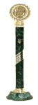
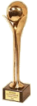
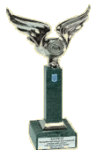
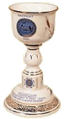
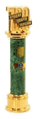
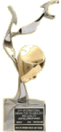
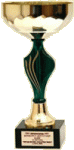
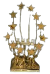

Вас вітає,
ГАЛИЦЬКА КАВА
"Усе починається з кави – навіть ранок..."
·Поціновувач кави·
"Усе починається з кави – навіть ранок..."
·Поціновувач кави·
Спільне українсько-англійське підприємство «Галка Лтд» визнано переможцем у номінації "Продовольчі товари" за підсумками проведеного Всеукраїнського конкурсу якості "100 кращих товарів України" 2008 року, організатором якого є Держспоживстандарт України.
25 серпня 2006 року “Галка” отримала статус “Виробника кращих вітчизняних товарів 2006” та особливу відзнаку - “Золотий символ конкурсу”. У номінації “Виробництво чаю та кави” підприємство представило 5 своїх продуктів - розчинну каву “Галка”, мелену “Еспрессо” , смажену в зернах “Арабіка”, каву з вершками “Латте” та розчинний кавовий напій “Життєдайний”. Кожен з них отримав найвищі оцінки конкурсної комісії, медалі та дипломи “Кращий вітчизняний товар 2006 року”.
Спільне українсько-англійське підприємство «Галка Лтд» визнано лауреатом за підсумками проведеного загальноукраїнського конкурсу якості "100 кращих товарів України" 2006-2007 років, організатором якого є Держспоживстандарт України.
У 2005 році, на Всеукраїнському конкурсі “Сто кращих товарів України”, який щорічно проводить в столиці Держспоживстандарт України, експерти дали вищі оцінки розчинній каві “Галка”, визнавши її унікальну рецептуру та відмінну якість.
26 березня 2005 року СП "Галка Лтд." стало переможцем Всеукраїнського конкурсу якостi продукцiї (товарiв, робiт, послуг) "100 кращих товарiв України" у номiнацiї "Продовольчi товари".
Унiкальну мiжнародну нагороду отримала львiвська кавова фабрика "Галка". На початку березня 2003 року в Женевi (Швейцарiя) компанiї "Галка" було вручено 24-у Мiжнародну вiдзнаку за технологiю та якiсть. Мiжнародне визнання високої якостi продукцiї та високопродуктивних сучасних технологiй львiвськоi торгової марки "Галка" ще раз пiдкреслює професiоналiзм та вiдданiсть своїй справi вiтчизняного кавовиробника. Ця нагорода стала сьомою мiжнародною нагородою у колекцiї "Галки". За право отримання вiдзнаки боролося бiльше сотнi компанiй. Нагадуємо, що Женева (Швейцарiя) вже вдруге вiдзначає високоякiсну продукцiю "Галки". Попереднiй приз в Женевi був отриманий у 1996 роцi.
В рамках 8-ї мiжнародної спецiалiзованої виставки "ПродЕКСПО Україна 2003", що проходила з 3 по 6 березня у новому виставковому комплексi м. Києва "КИЇВЕКСПОПЛАЗА", проходила незалежна дегустацiя продукцiї кавовиробникiв - учасникiв виставки. В результатi порiвняльного тестування Центр Незалежних Споживацьких Експертиз "ТЕСТ" присвоїв оцiнку "ВIДМIННО" розчиннiй кавi виробництва СП "Галка Лтд." Як переможець конкурсу-дегустацiї кави у номiнацiї "кава розчинна", СП отримало диплом та почесну нагороду. Таке чергове незалежне визнання ще раз пiдтверджує високу якiсть продукцiї ТМ "ГАЛКА" та справжню майстернiсть львiвських кавоварiв.
Брюссель, 2000 р. Встановлена "Премiя ЄвроМаркет" вручається двiчi на рiк у Брюсселi в присутностi численних офiцiйних осiб. Цiєю премiєю нагороджують пiдприємства, фiрми, банки, асоцiацiї рiзних країн, якi досягли особливих успiхiв в своїй дiяльностi. Стати лауреатом Премiї ЄвроМаркет нелегко. Спецiальний Комiтет з Премiй, у який входять досвiдченi фахiвцi в областi маркетингу i бiзнесу, ретельно вiдбирає кандидатiв, якi повиннi вiдповiдати найсуворiшим вимогам. Присудження премiї - це дуже висока оцiнка заслуг i досягнень її лауреатiв з боку мiжнародного спiвтовариства.
